Cijela lovačka udruga u jednoj aplikaciji.
Članovi, članarina s HUB-3 uplatnicama, knjiga dezinfekcije, čeke i lovački dnevnik – na računalu za upravu, na mobitelu za svakog lovca. Bez pretplate, bez naplate po članu. Pri postavljanju vam osobno pomažem.
Demo bez registracije: izmišljena udruga, prijava jednim klikom.
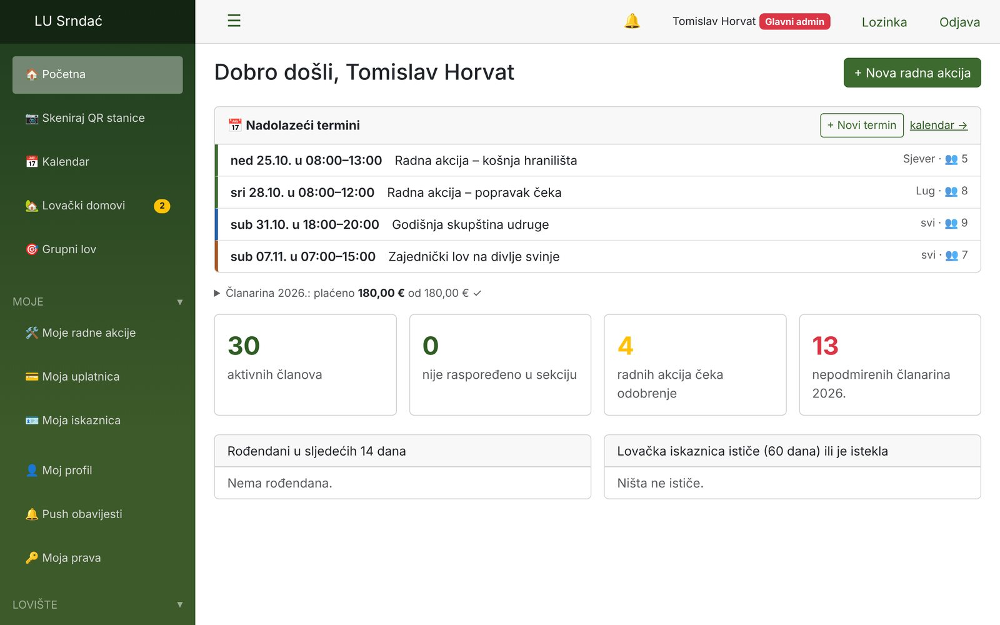
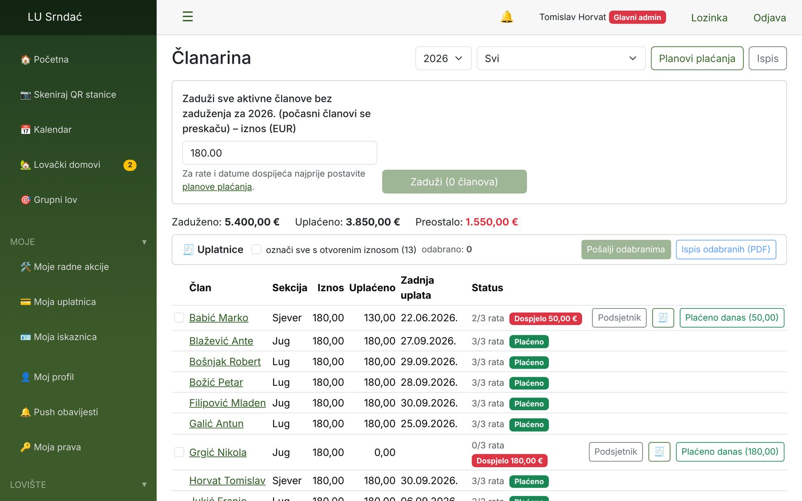
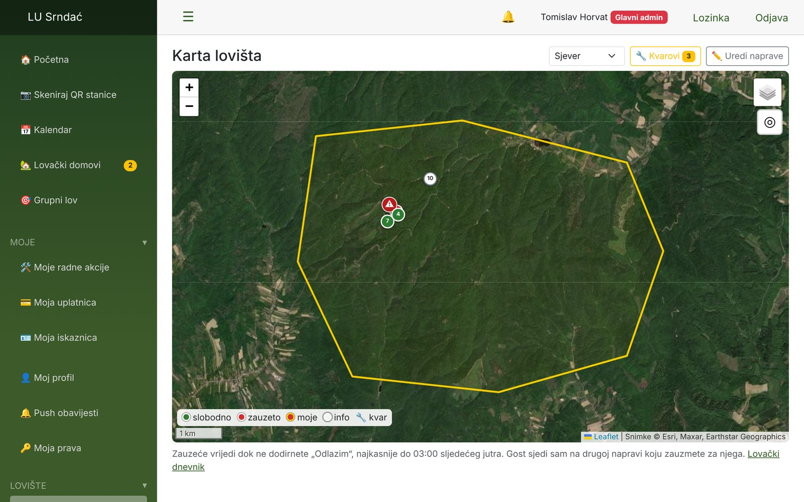
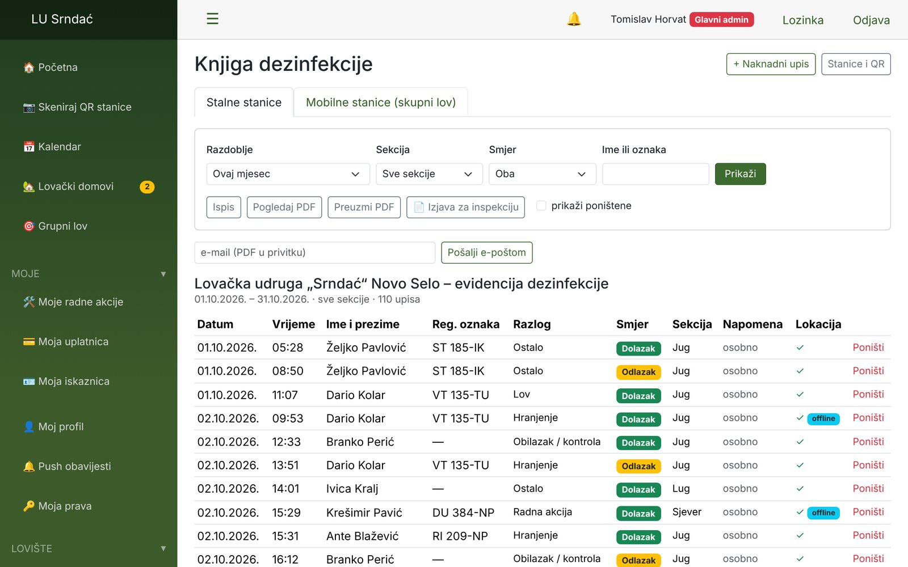
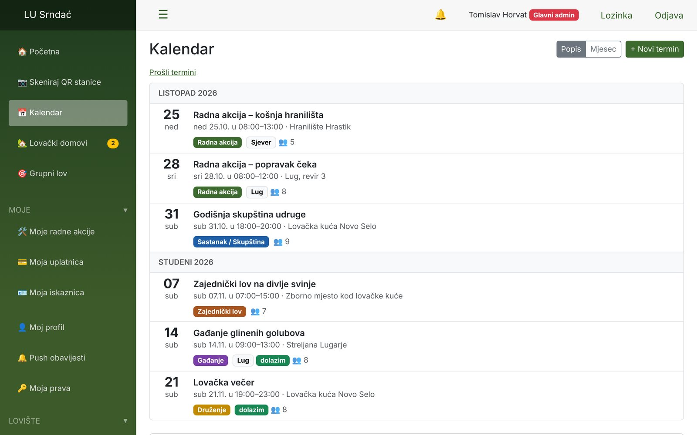
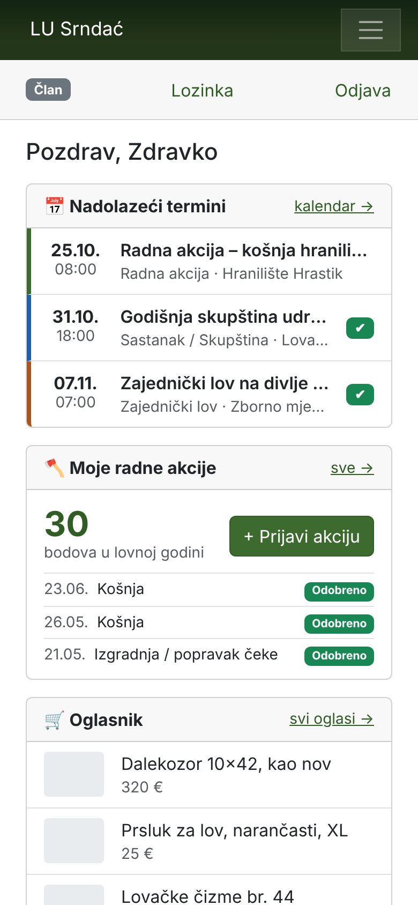
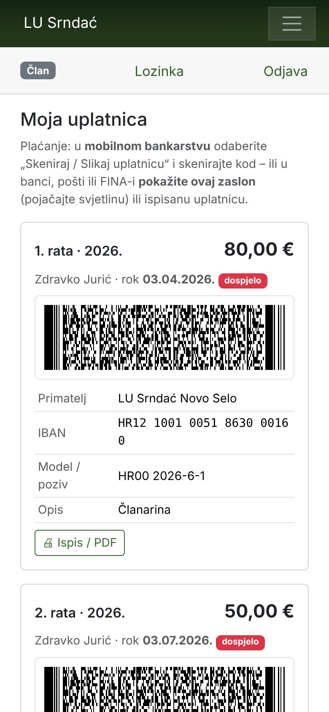
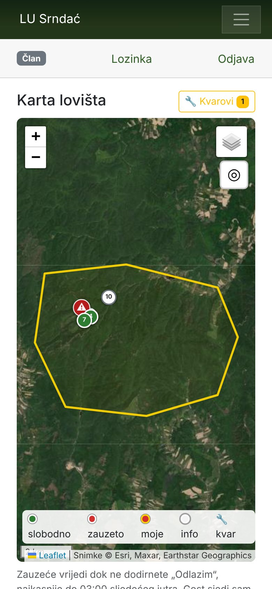
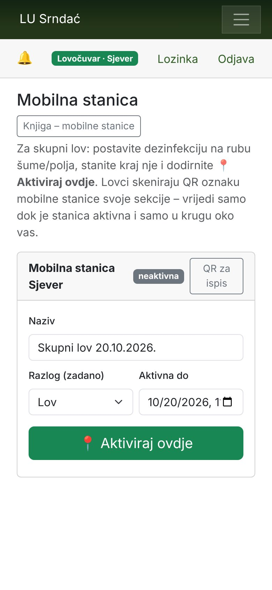
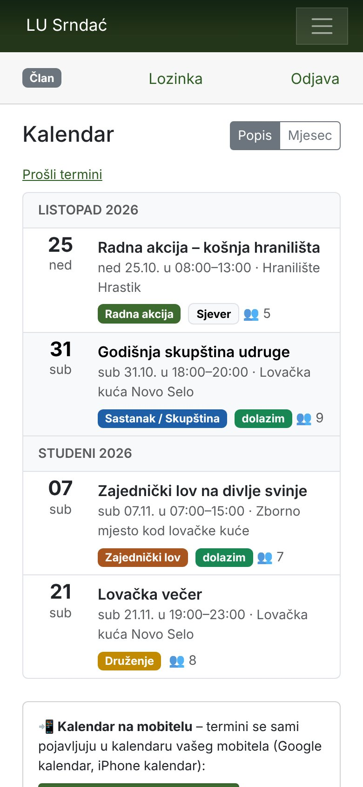
Besplatno. Zauvijek.
Nema pretplate, nema licence po članu, nema skrivenih troškova. Privatni, nekomercijalni projekt – iz lovačkog drugarstva.
Vaši podaci ostaju vaši
Aplikacija radi na vašem webhostingu. Nitko drugi – ni autor – nema pristup podacima udruge. Kopije su šifrirane, ažuriranja potpisana.
Radi i u šumi
Na mobitelu se otvara kao aplikacija, bez Google Playa i App Storea. Upis radi i bez signala – šalje se kad se vrati internet.
Pogledajte iznutra
Ovako izgleda kod uprave.
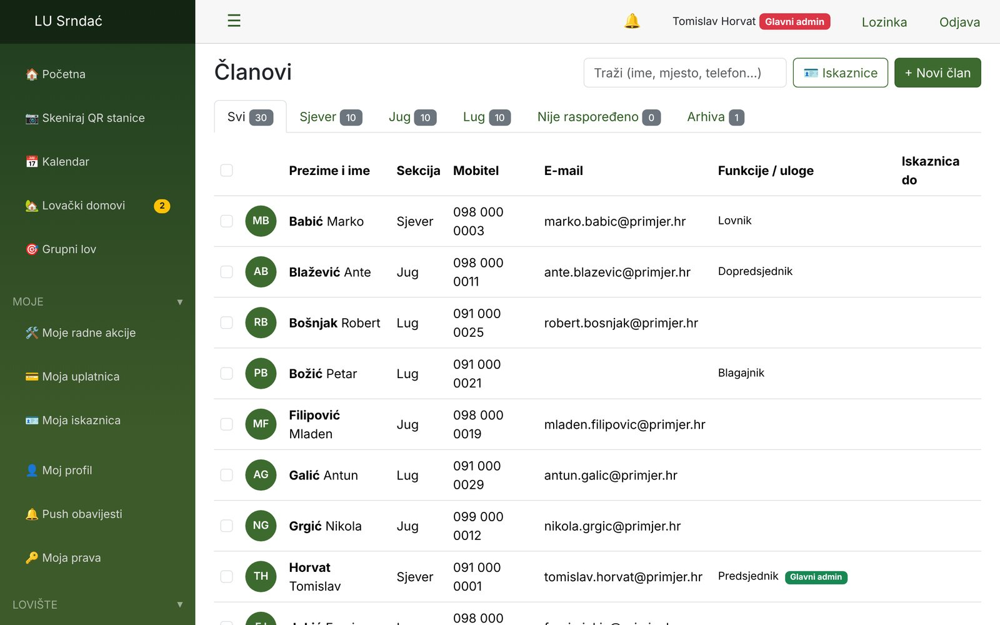
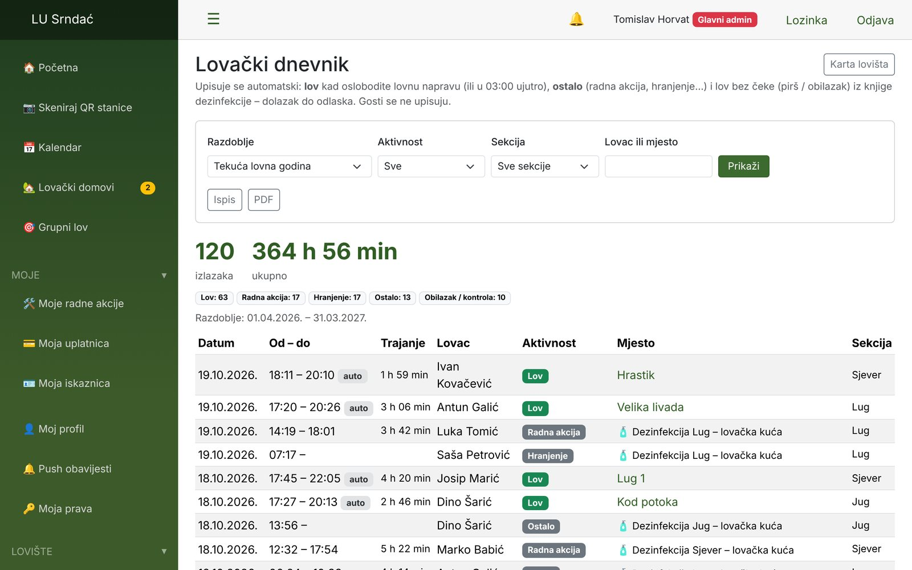
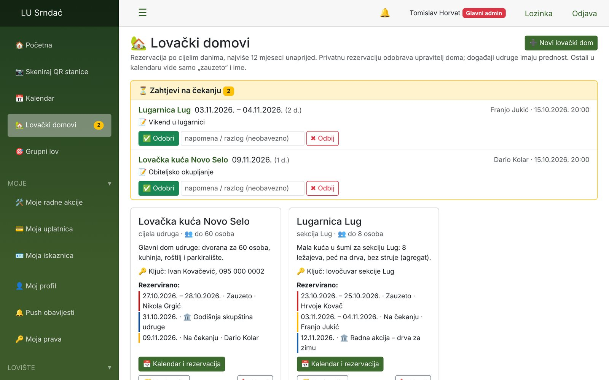
Za svakog lovca
Na mobitelu jednostavno – i za one koji ne vole tehniku.
Lovac otvori aplikaciju i odmah vidi što ga zanima: sljedeće termine, svoje bodove, svoju uplatnicu i kartu lovišta. Zauzimanje čeke ili prijava radne akcije – jednim dodirom.
- Članska iskaznica s QR kodom – uvijek u džepu
- Uplatnica s kodom za mobilno bankarstvo
- Knjiga dezinfekcije: skeniraj QR na stanici i gotovo
- Upis radi i bez signala u lovištu
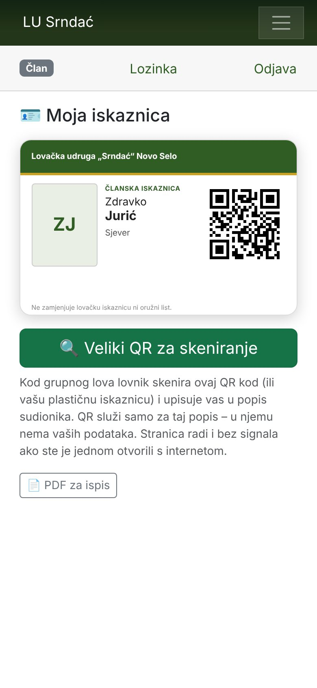
Što sve može
Sve što udruga vodi na papiru i u tablicama – na jednom mjestu.
Svaka udruga uključuje samo module koje treba. Lovci vide jednostavan izbornik, uprava ima sve.
Članovi
Osobni i lovački podaci, fotografija, funkcije, iskaznica i ispit, arhiva bivših članova, uvoz iz Google kontakata.
Sekcije strogo odvojene
Svaka lovna jedinica vidi samo sebe. Uprava vidi sve.
Članarina i HUB-3 uplatnice
Jednokratno ili 1–12 rata. Član vidi samo svoju uplatnicu – ispis ili kod na mobitelu za banku.
Radne akcije i bodovi
Članovi prijavljuju sami s fotografijom, uprava odobrava. Izvještaji po lovnoj godini.
Knjiga dezinfekcije (ASK)
QR oznaka na stanici, provjera GPS-a, dolazak/odlazak, mobilna stanica za skupni lov. Pristup za lovnog inspektora.
Lovište i čeke
Karta lovišta, zauzimanje čeke jednim dodirom, automatsko oslobađanje u 03:00, prijava kvara s fotografijom.
Lovački dnevnik
Tko je bio gdje i kada – po sekcijama, s filtrom po vrsti posjeta.
Grupni lov – karta uživo i SOS
Poziv svima na mobitel, položaj sudionika na karti, SOS organizatoru. Popis sudionika skeniranjem iskaznica.
Članska iskaznica s QR kodom
U formatu bankovne kartice za ispis i u aplikaciji – radi i bez signala.
Kalendar i lovački domovi
Termini s „dolazim / ne dolazim“, rezervacija domova po danima bez dvostrukih rezervacija.
Push obavijesti
Na mobitel i kad je aplikacija zatvorena – Android i iPhone. Obavijesti s potvrdom čitanja.
Psi, inventura, oglasnik
Bodovi za pse, popis opreme, statut i pravilnici, oglasnik za članove, poruke preko WhatsAppa ili Vibera.
Od lovca za lovce
„Evidencija se u lovačkim društvima često vodi na papiru, u bilježnicama i raznim tablicama. Želio sam napraviti alat koji je jednostavan, pregledan i radi na mobitelu – i za članove i za upravu.“
Iza aplikacije ne stoji firma, nego lovac i član lovačke udruge. Aplikaciju razvija u slobodno vrijeme i dijeli je besplatno – iz lovačkog drugarstva.
Tko stoji iza aplikacije i zašto je besplatna →Vlastita evidencija za vašu udrugu
Postavljanje? Pomažem osobno – besplatno.
Ne morate biti informatičar. Javite se – zajedno ćemo postaviti evidenciju na vaš webhosting, preko telefona ili poruka, korak po korak. Ili sami u tri koraka:
- 1
Preuzmite
Zadnju verziju s GitHuba – ili samo jednu datoteku
instaliraj.php. - 2
Učitajte
Preko FTP-a na bilo koji PHP webhosting. MySQL baza nije potrebna.
- 3
Pokrenite
Upišite naziv udruge, sekcije i administratora. Nove verzije jednim klikom.
Isprobajte sami – za dvije minute.
Demo udruga s izmišljenim članovima. Odaberite ulogu i kliknite se kroz sve. Ništa ne možete pokvariti – svake noći sve se vraća na početno stanje.
Radi na računalu i mobitelu. Bez registracije, bez e-pošte.
Česta pitanja
Je li stvarno besplatno? Gdje je kvaka?
Nema kvake. Privatni, nekomercijalni projekt. Softver je i ostat će besplatan – bez pretplate, bez naplate po članu, bez plaćenih dodataka. I pomoć pri postavljanju je besplatna.
Tko vidi podatke naše udruge?
Samo vi. Aplikacija radi na vašem serveru, podaci se nikamo ne šalju. Autor nema pristup. Vaša evidencija se ne pojavljuje ni na Googleu.
Nismo informatičari. Možemo li to sami?
Ako znate učitati datoteke preko FTP-a – da. A ako ne: javite se, pomoći ću vam osobno.
Treba li aplikacija iz Google Playa ili App Storea?
Ne. Na mobitelu u pregledniku odaberite „Dodaj na početni zaslon“ – radi na Androidu i iPhoneu.
Što ako stariji članovi nemaju pametni telefon?
Nema problema. Uprava upisuje za njih, a za knjigu dezinfekcije postoje papirnate liste za ispis koje se kasnije unesu u aplikaciju.